نمونه عملی: ارزشگذاری انبار#
اودوو یک نرمافزار مدیریت سازمانی یکپارچه (ERP) است که فرآیندهای انبارداری و حسابداری را بهطور تنگاتنگ به هم متصل میسازد. این به معنی این است که هرگونه عملیاتی که در انبار انجام میشود، به صورت خودکار بر موجودی و حسابداری شرکت تأثیر میگذارد.
ارزشگذاری انبار یکی از مهمترین فرآیندهای این انتگرالیون است. این فرآیند برای تعیین ارزش موجودی و کنترل صحت آن ضروری است. اودوو این فرآیند را بهطریقهای جامع و خودکار پشتیبانی میکند.
توجه
برای مطالعه مستندات رسمی اودوو درباره شمارش انبار، بر روی لینک مستندات اودوو کلیک کنید.
هدف این بخش:
در این فصل، شرکت پریتی دیزان را به عنوان نمونهای عملی بررسی میکنیم. شامل:
تنظیم صحیح اودوو برای فرآیند ارزشگذاری انبار
مراحل شمارش انبار و انبارگردانی
ارتباط فرآیند انبارگردانی با ثبتهای حسابداری
استفاده از گزارشها برای نظارت و تشخیص مشکلات
بهترین روشهای اجرایی در سازمان
بخش اول: تنظیمات و آمادهسازی سیستم#
تنظیمات سیستم، بنیاد صحیح برای فرآیند ارزشگذاری انبار است. این تنظیمات را میتوان به چند سطح تقسیم کرد:
تنظیمات کلی انبار - که برای کل سیستم اعمال میشود
تنظیمات مکانها - که برای هر نقطه ذخیرهسازی اعمال میشود
تنظیمات محصولات - که برای هر کالا اعمال میشود
تنظیمات حسابداری - که ارتباط بین انبار و دفاتر را برقرار میکند
تنظیمات کلی انبار#
تنظیمات کلی انبار بر کل فرآیندهای ارزشگذاری تأثیر میگذارد. برای دسترسی به این تنظیمات مسیر زیر را دنبال کنید:
Inventory app → Configuration → Settings
تصویر زیر تنظیمات کلی را نشان میدهد:
{kind=link}
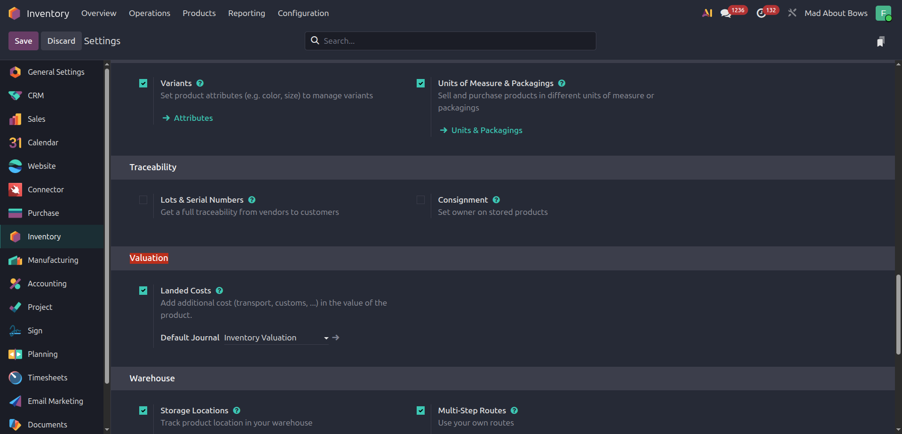
تنظیمات توصیهشده برای شرکت پریتی دیزان:
Landed Cost: فعال (True) - این تنظیم اجازه میدهد هزینههای اضافی (مانند حمل و بیمه) را به ارزش محصولات اضافه کنید
Default Journal: Inventory Valuation - دفتر روزنامهای که برای ثبت تغییرات ارزش انبار استفاده میشود
مدیریت انبارها#
انبار، محلی فیزیکی است که در آن محصولات ذخیره میشوند. اودوو امکان مدیریت چندین انبار را فراهم میکند.
برای ایجاد یا مدیریت انبارها، مسیر زیر را دنبال کنید:
Inventory app → Configuration → Warehouses
{kind=link}
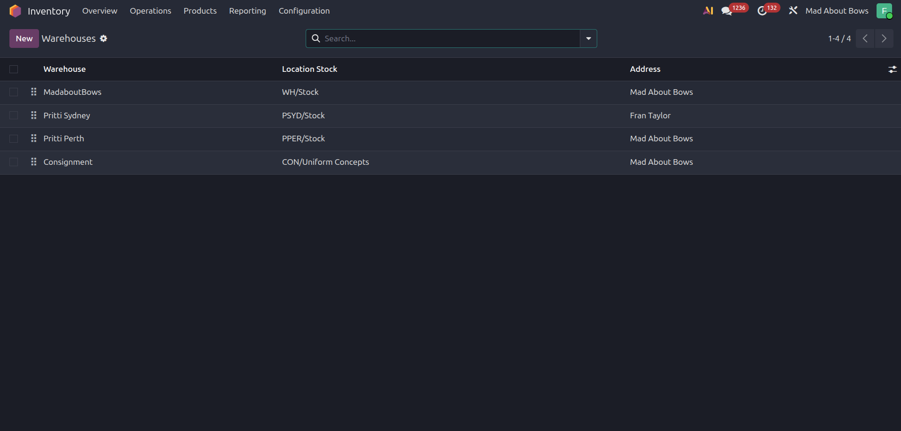
در هر انبار، میتوانید تنظیمات خاصی تعریف کنید:
{kind=link}
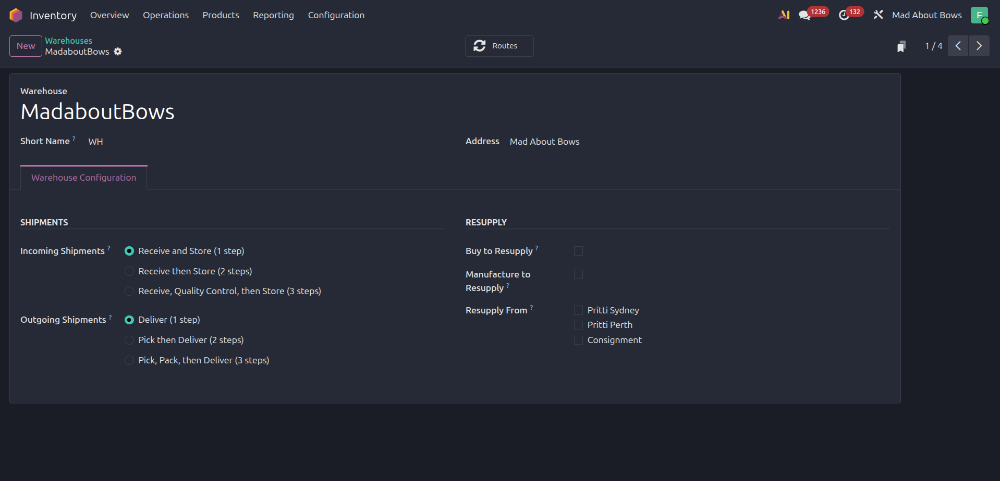
مهمترین تنظیمات:
شناسه انبار (Inventory Key): یک کد منحصر برای شناخت انبار
مسیر ورودی (Input Location): محلی که کالاهای دریافتشده به آنجا منتقل میشوند
مسیر خروجی (Output Location): محلی که کالاهای فروختهشده از آنجا برداشته میشوند
مکانهای ذخیرهسازی#
مکان (Location)، نقطه دقیقتری است که در داخل انبار تعریف میشود. برای مثال، یک انبار میتواند شامل قفسههای مختلف، محفظههای خاصی برای کالاهای گرم یا سرد، و... باشد.
برای ایجاد یا مدیریت مکانها، مسیر زیر را دنبال کنید:
Inventory app → Configuration → Locations
تصویر زیر مکانهای شرکت پریتی دیزان را نشان میدهد:
{kind=link}
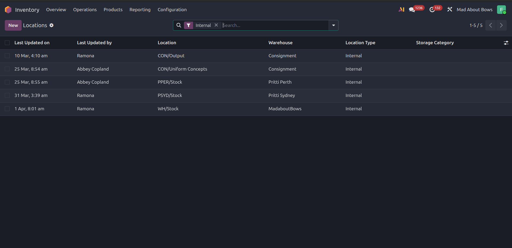
نامگذاری مکانها:
در شرکت پریتی، مکانها با استفاده از الگوی زیر نامگذاری میشوند:
{شناسه انبار}/Stock
برای مثال: WH01/Stock یا WH02/Stock
تنظیمات هر مکان:
هر مکان دارای تنظیمات خاصی است که برای دورهای شمارش اهمیت دارند:
{kind=link}
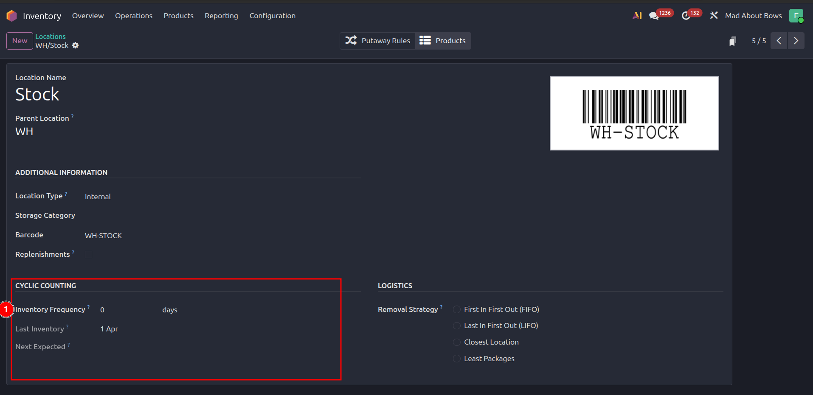
در تصویر بالا، نقطه شماره ۱ نشان میدهد:
طول دوره شمارش (Inventory Frequency): تعیین میکند که هر چند روز یک بار انبار باید شمارش شود
آخرین تاریخ شمارش: به صورت خودکار ثبت میشود
تاریخ شمارش بعدی: بر اساس دوره تعیینشده محاسبه میشود
توجه
اگر شمارش انبار به صورت دورهای (مثلاً هر ۳ ماه) انجام شود، این تنظیمات کمک میکند تا بهموقع انبار را شمارش کنید.
دستهبندی محصولات#
دستهبندی (Category)، ابزاری قدرتمند برای سازماندهی محصولات است. هر دستهبندی میتواند تنظیمات خاص خود را داشته باشد که بر تمام محصولات در آن دسته اعمال میشود.
برای مدیریت دستهبندیها، مسیر زیر را دنبال کنید:
Inventory app → Configuration → Product Categories
{kind=link}
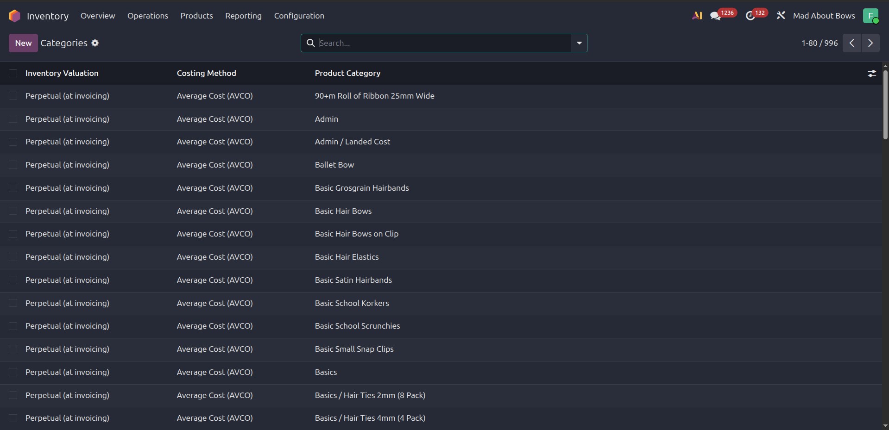
اهمیت دستهبندیها:
دستهبندیهای محصول برای فرآیند ارزشگذاری انبار بسیار مهم هستند. تنظیماتهایی مثل روش محاسبه ارزش (FIFO، LIFO، Weighted Average)، دفتر روزنامهای برای انتقالات، و... در دستهبندی تعریف میشوند.
{kind=link}
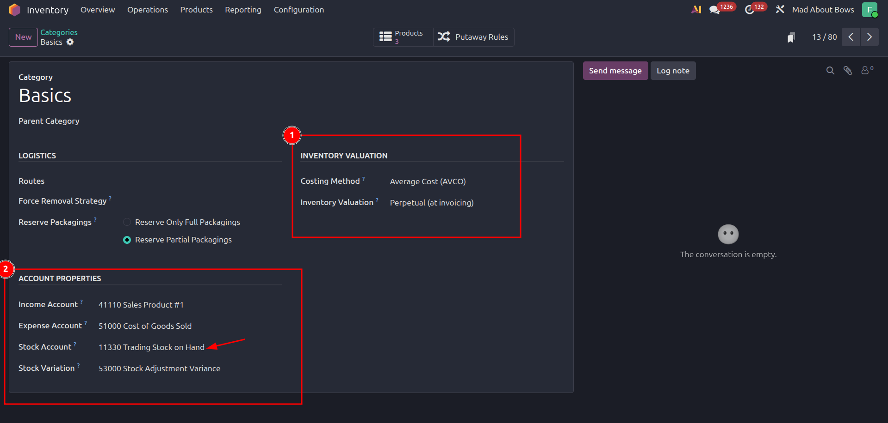
ساختار دستهبندیهای توصیهشده:
دستهبندیهای محصول دارای ساختار سلسلهمراتبی هستند. اودوو این ساختار را برای ارثبرداری تنظیمات استفاده میکند. توصیه میشود از دستهبندیهای اصلی زیر استفاده کنید:
All (اصلی)
├── Purchase (خریداری)
├── Sale (فروش)
├── Shipping (حملونقل)
└── Consumable (مصرفی)
بهترین روش:
تمام دستهبندیهای دیگر را به بخش تجارت الکترونیکی منتقل کنید. این کار سیستم را سادهتر و مدیریت تنظیمات را راحتتر میکند.
توجه
فیلد Inventory Valuation بهطور معمول روی Real Time (یا Perpetual) تنظیم میشود. این بدان معنی است که هر زمان موجودی تغییر میکند، یک ثبت حسابداری به صورت خودکار ایجاد میشود.
تنظیمات محصول#
محصولات، هستهی سیستم انبار هستند. تنظیمات درست هر محصول، بر صحت فرآیند ارزشگذاری تأثیر میگذارد.
برای تنظیم محصولات، مسیر زیر را دنبال کنید:
Inventory app → Products → Products
{kind=link}
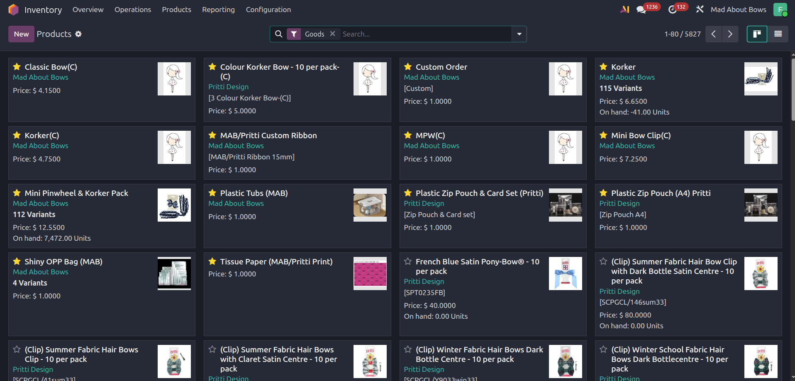
انتخاب محصول و باز کردن تنظیمات:
محصول مورد نظر را انتخاب کنید تا فرم تنظیمات آن باز شود:
{kind=link}
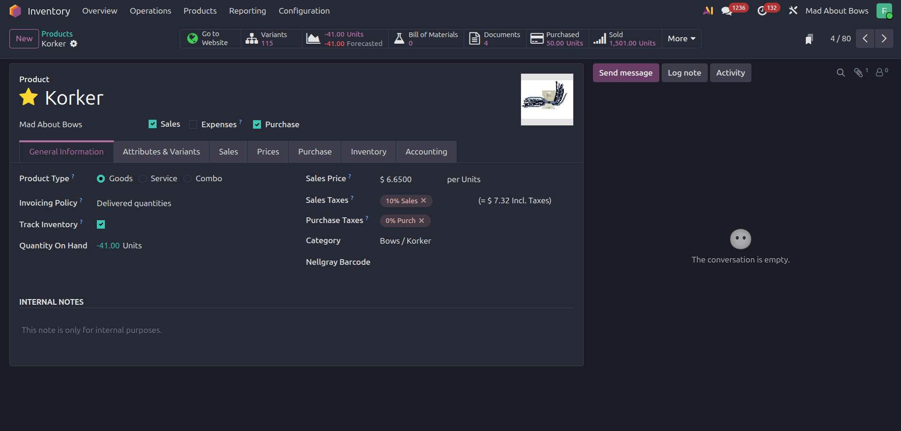
تنظیمات توصیهشده برای محصول قابل فروش و انبارداری:
Sale (فروش): فعال باشد
Purchase (خریداری): فعال باشد
Product Type: Good (محصول فیزیکی)
Track Inventory (ردگیری انبار): فعال باشد
Category (دستهبندی): All / Sale یا دستهبندی مناسب دیگر
نکته مهم:
تنظیمات بیشتری مثل روش محاسبه ارزش (Valuation Method)، و... به صورت خودکار از دستهبندی محصول بهارث میرسند. این امر کار را ساده میکند و اطمینان میدهد که تمام محصولات در یک دستهبندی، تنظیمات یکسانی داشته باشند.
تنظیمات حسابداری انبار#
پس از تنظیم انبار، محصولات و دستهبندیها، نیاز است که حسابداری را برای پذیرش اطلاعات انبار آماده کنید. این تنظیمات پل ارتباطی بین بخش انبار و دفاتر حسابداری است.
برای دسترسی به این تنظیمات، مسیر زیر را دنبال کنید:
Accounting app → Configuration → Settings
هشدار
این تنظیمات تنها در نسخه Enterprise (حرفهای) اودوو موجود است. اگر از نسخه Community استفاده میکنید، این امکانات دردسترس نیستند.
{kind=link}
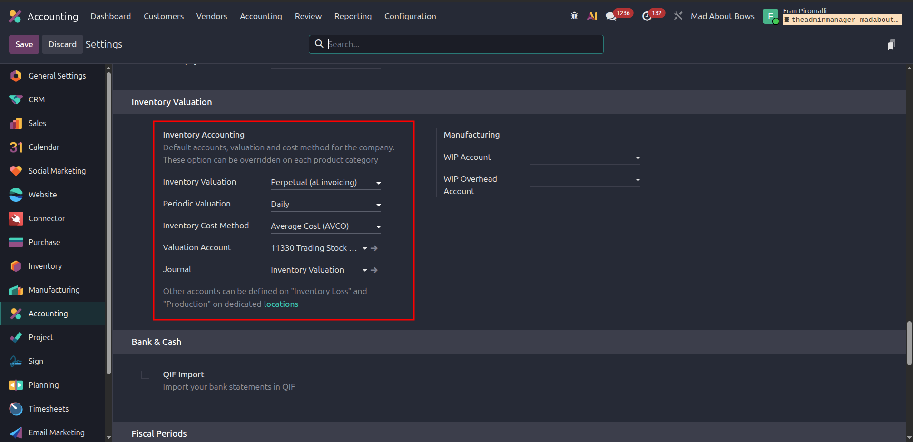
تنظیمات توصیهشده:
Inventory Valuation: Real Time (Perpetual)
این نشان میدهد که تغییرات انبار به صورت فوری در حسابداری ثبت شوند.
Periodic Valuation: Daily
فرکانسی محاسبهی مجدد ارزش موجودی.
Inventory Cost Method: Average Cost (AVCO)
روشی برای محاسبهی ارزش میانگین محصولات. سایر روشها عبارتند از FIFO و LIFO.
Journal: Inventory Valuation
دفتر روزنامهای که برای ثبتهای انبار استفاده میشود.
این تنظیمهای کلی سیستم است. این تظیمها پیش فرض است اما تنظیمهایی که در گروه محصولات هست این مقادیر را تغییر میدهد.
بخش دوم: فرآیند شمارش و انبارگردانی#
حالا که تنظیمات کامل شد، میتوانیم فرآیند واقعی شمارش انبار و انبارگردانی را آغاز کنیم.
شرکت پریتی دیزان، از روش شمارش برحسب نیاز استفاده میکند. به این معنی که انبارگردانی به صورت دورهای نیست، بلکه هر زمان که نیاز باشد انجام میشود. برای این دلیل، تنظیمات انبار بر روی Real Time (Perpetual) تنظیم شده است.
روشهای وارد کردن اطلاعات شمارش:
اودوو دو روش را برای ورود اطلاعات شمارش پشتیبانی میکند:
روش دستی: برای شمارشهای کوچک یا مختص
روش فایل Excel: برای شمارشهای بزرگ و دستهای
روش اول: شمارش دستی#
این روش برای شمارشهای کوچک یا وقتی تعداد محصولات اندک است مناسب است.
مراحل:
۱. منو زیر را باز کنید:
Inventory app → Operations → Physical Inventory
{kind=link}
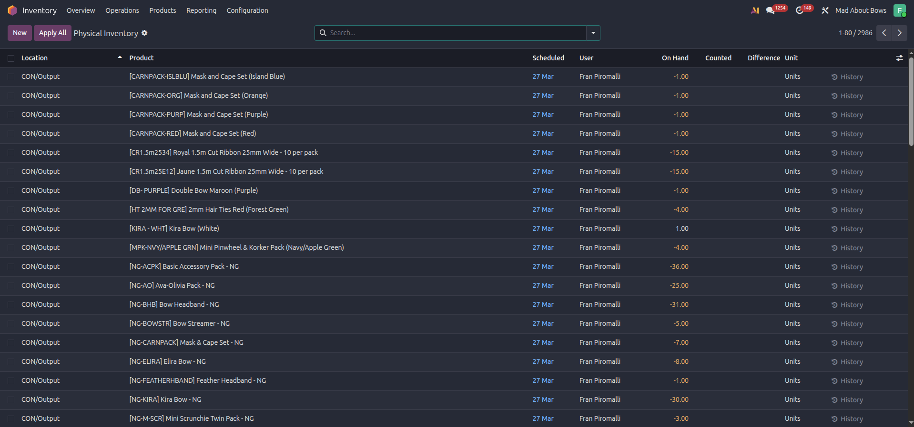
۲. برای ایجاد شمارش جدید، دکمه Create را بزنید.
۳. سطرهای جدیدی اضافه کنید. در هر سطر، اطلاعات زیر را تعیین کنید:
Location (مکان): محلی که شمارش در آن انجام میشود
Product (محصول): کالایی که شمارش میشود
Schedule Date (تاریخ برنامهریزی): تاریخ انتظار برای شمارش
User (کاربر): شخصی که شمارش را انجام میدهد
Counted Quantity (مقدار شمارششده): تعداد کالایی که واقعاً وجود دارد
{kind=link}
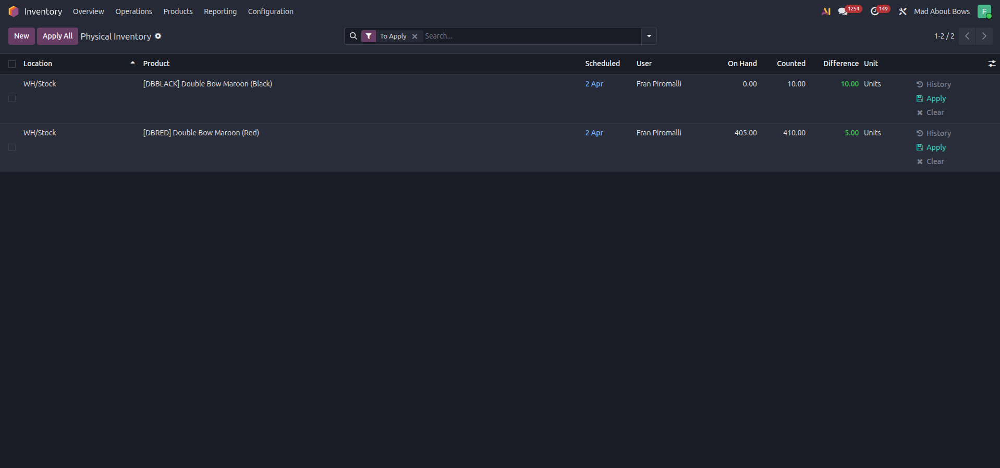
۴. پس از وارد کردن تمام سطرها، دکمه Apply all را در بالای صفحه بزنید.
۵. یک پنجرهی wizard باز میشود:
{kind=link}
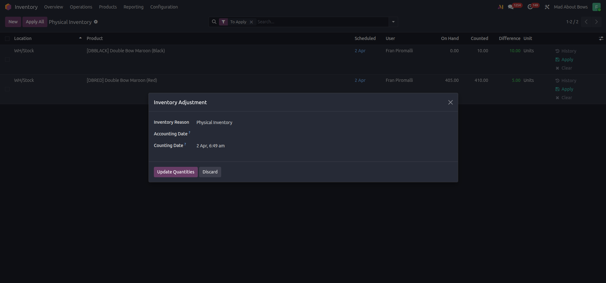
۶. در این پنجره، اطلاعات زیر را تعیین کنید:
Inventory Reason (دلیل انبارگردانی): دلیل انجام شمارش (مثلاً: شمارش دورهای، شمارش تصحیحی)
Accounting Date (تاریخ حسابداری): تاریخی که ثبت حسابداری باید در آن ثبت شود
Counting Date (تاریخ شمارش): تاریخی که شمارش واقعاً انجام شده است
۷. دکمه Update Quantity را بزنید.
نکته
اگر تفاوتی بین موجودی سیستم و مقدار شمارششده وجود داشته باشد، اودوو به صورت خودکار یک سند انتقال ایجاد میکند.
روش دوم: شمارش با فایل Excel#
این روش برای شمارشهای بزرگ و وقتی دادههای زیادی وجود دارد بسیار مفید است. با این روش، میتوانید دادهها را در Excel آماده کنید و سپس به صورت دستهای وارد کنید.
مراحل:
۱. برای شروع، به صفحه Physical Inventory برگردید و دکمه Import را بزنید.
۲. یک فایل Excel بسازید که ستونهای زیر را داشته باشد:
Location / External ID: شناسه خارجی مکان
Product / External ID: شناسه خارجی محصول
User / External ID: شناسه خارجی کاربر
Schedule Date: تاریخ برنامهریزی
Counted Quantity: مقدار شمارششده
مثال:
Location/External ID | Product/External ID | User/External ID | Schedule Date | Counted Quantity WH01/Stock | PROD001 | USER1 | 2024-01-15 | 50 WH01/Stock | PROD002 | USER1 | 2024-01-15 | 30
۳. فایل Excel را ذخیره کنید و در صفحه Import در اودوو بارگذاری کنید.
۴. پس از بارگذاری موفق، مراحل نهایی همانند روش دستی (مراحل ۴-۷) را دنبال کنید.
توجه
فایل Excel باید بهطور دقیق تنظیم شود. نامهای ستونها و دادهها باید مطابق با اودوو باشند.
بخش سوم: گزارشها و نظارت#
گزارشها نه تنها وضعیت جاری را نشان میدهند، بلکه در شناسایی و حل مشکلات کمک میکنند. در این بخش، دو گزارش مهم را بررسی میکنیم.
گزارش تاریخچه انتقالات#
این گزارش یک فهرست کامل از تمام انتقالات انجامشده در انبار را نشان میدهد. برای هر محصول، انتقالات مربوط به آن ثبت میشود.
برای دسترسی به این گزارش، مسیر زیر را دنبال کنید:
Inventory app → Reporting → Move history
{kind=link}
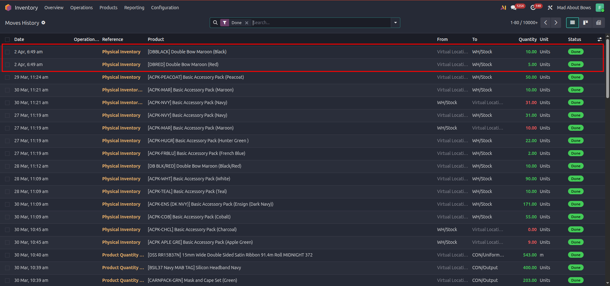
راهنمایی استفاده:
این گزارش برای ردیابی تاریخ انتقالات مفید است.
میتوانید بر اساس تاریخ، محصول، یا مکان فیلتر کنید.
هر انتقال، مقدار محصول، منشأ و مقصد را نشان میدهد.
گزارش سندهای حسابداری#
هر شمارش و انبارگردانی، یک یا چند سند حسابداری (Journal Entry) ایجاد میکند. این سندها، تغییرات ارزش انبار را در دفاتر حسابداری ثبت میکنند.
برای دسترسی به این سندها، مسیر زیر را دنبال کنید:
Accounting app → Reporting → Journal Entries
{kind=link}
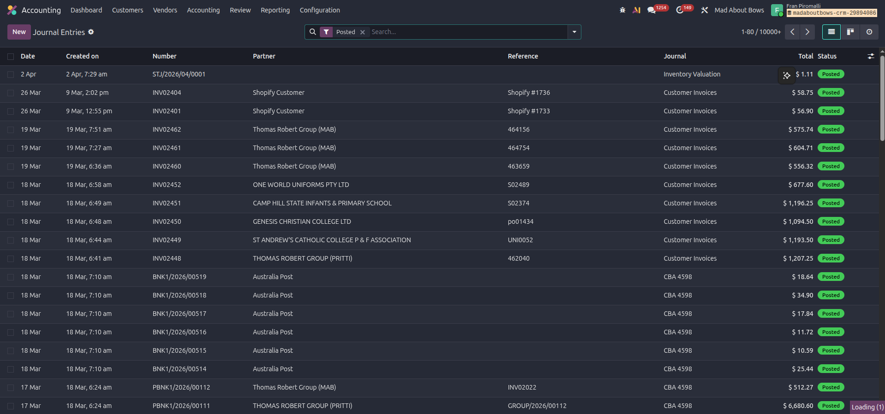
برای دیدن جزئیات یک سند، روی آن کلیک کنید:
{kind=link}
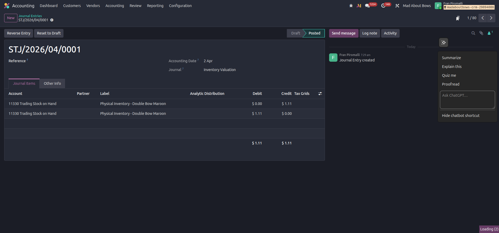
تفسیر سند حسابداری:
یک سند حسابداری برای انبارگردانی معمولاً شامل موارد زیر است:
تاریخ سند: تاریخی که تغیر در انبار تایید شد
توصیف: شرح کوتاهی از انبارگردانی
صورتحسابها: نمایش حسابهای مربوط و مبالغ (بدهکار و بستانکار)
مرجع: ارتباط با سند انبار
وضعیت: Posted (ثبتشده) یا Draft (پیشنویس)
بهترین روشهای اجرایی#
برای اجرای موفق فرآیند ارزشگذاری انبار، توصیههای زیر را دنبال کنید:
- ۱. تنظیمات اولیه: قبل از شروع، اطمینان حاصل کنید که تمام تنظیمات (انبار، مکانها،
دستهبندیها، و حسابداری) به صحیح تنظیم شدهاند.
- ۲. آموزش تیم: از تمام کارکنانی که در فرآیند دخیل هستند، آموزش دهید تا
دادههای صحیح و دقیق وارد کنند.
۳. نظارت منظم: به صورت منظم، گزارشها را بررسی کنید و تفاوتهای موجودی را کنترل کنید.
- ۴. ثبت دلیل: برای هر شمارش، دلیل روشن و مشخصی ثبت کنید تا بعداً
بتوانید مشکلات را تشخیص دهید.
۵. بایکآپ منظم: دادههای حسابداری و انبار را به صورت منظم پشتیبان بگیرید.
- ۶. بررسی دورهای: در انتهای هر دوره مالی، کل فرآیند را بررسی کنید و
اطمینان حاصل کنید که همهچیز صحیح است.